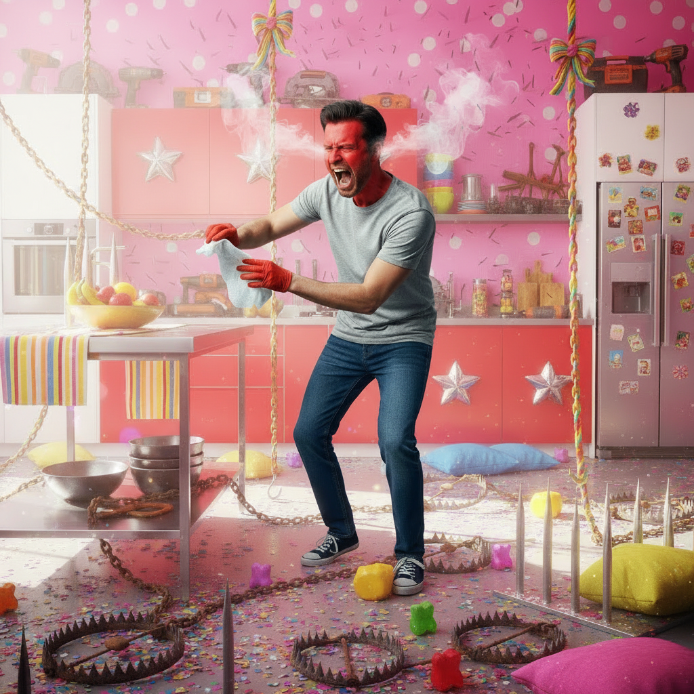
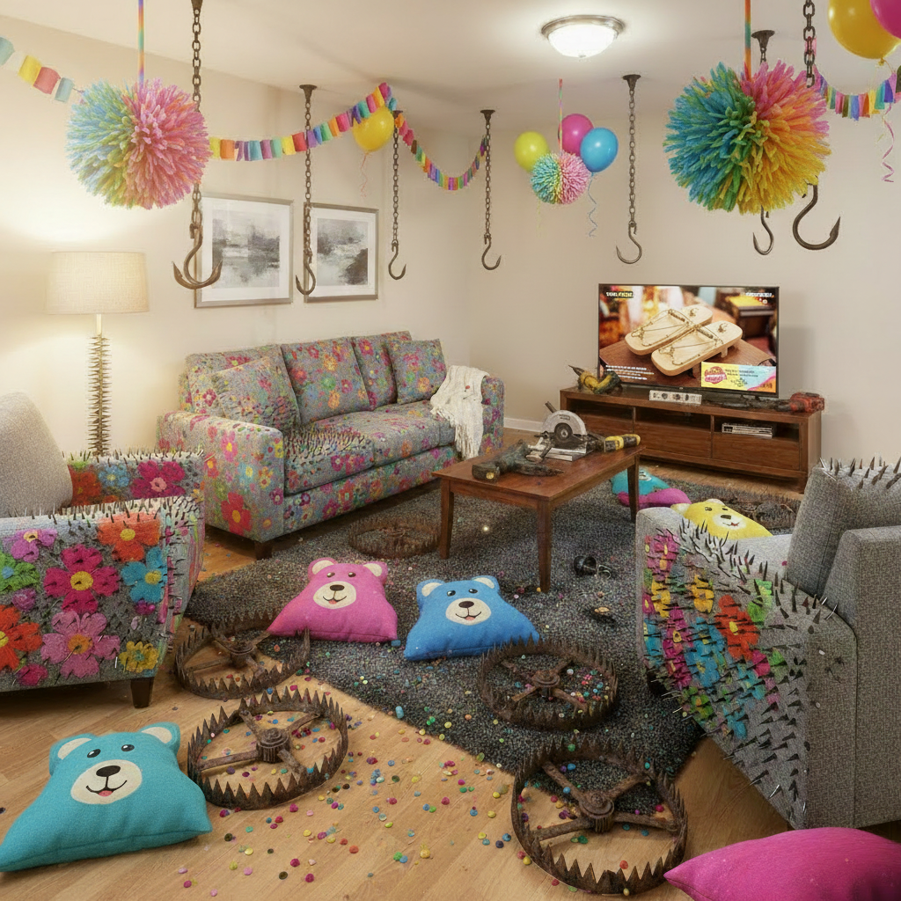
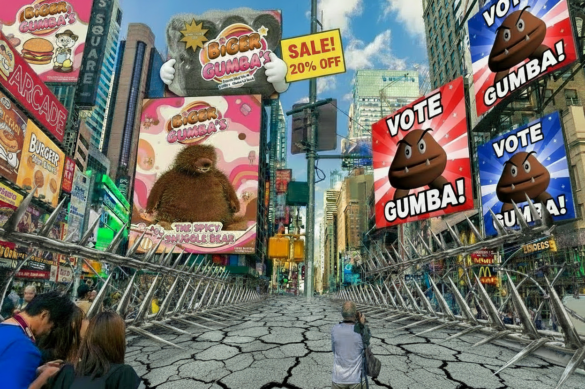
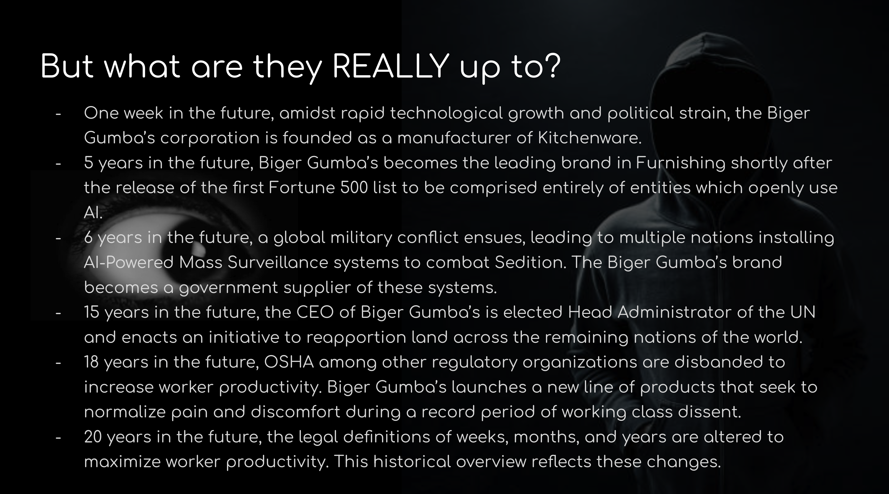

Weaponized Comfort



The final project for the MAT 10 Intro course offered as part of the Media Arts & Design minor at UCSB. Prompted by my instructor to create a vision of the future using Generative AI tools, I decided to 'create' a dystopian world of my own in which familiar everyday objects are merged with dangerous elements, making for uncanny pieces. Said pieces are intended to provide a commentary on how modern technology is sometimes harmful in nearly unnoticeable ways, in making them more explicit.
